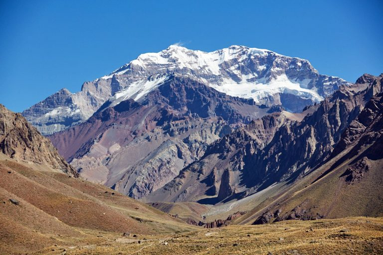
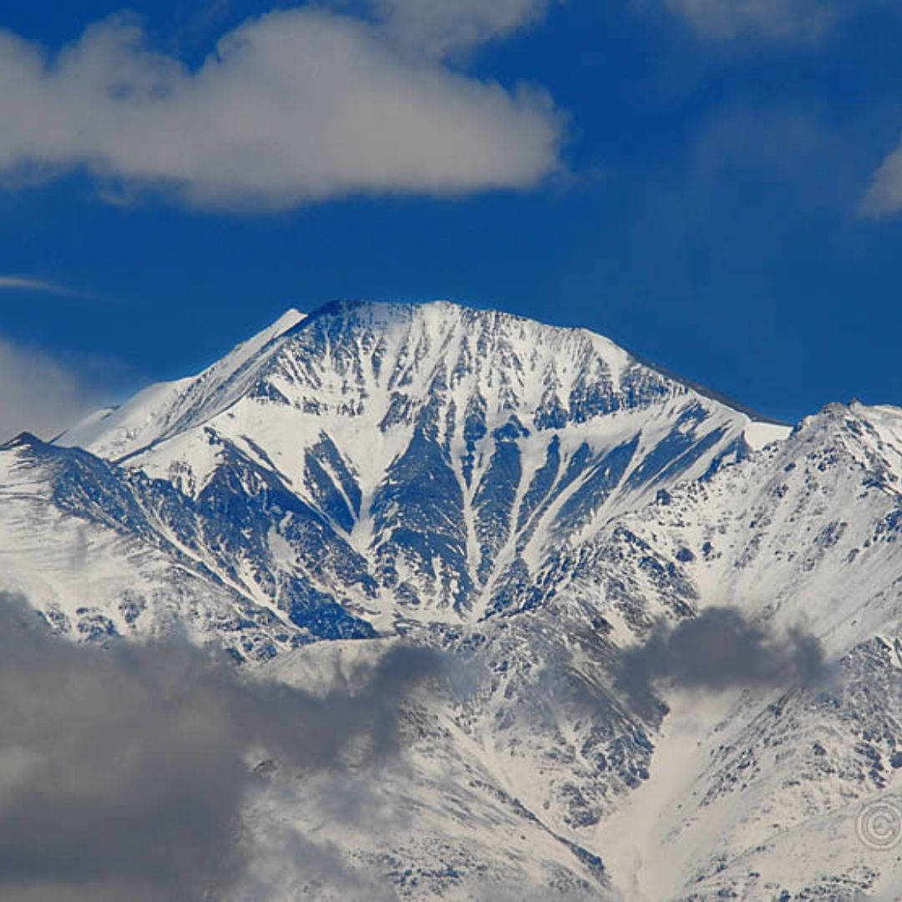

Cerro Aconcagua
- 18 días de expedicion (Ruta Normal)
- 35-40 km de trekking total
- 6.962 m
- Parque Provincial Aconcagua, Mendoza, Argentina

Cerro El Plata
- 6-7 días de expedicion (Ruta Normal)
- 30 km de trekking total
- 5.968 m
- Parque Provincial Cordon del Plata, Mendoza, Argentina

Cerro Vallecito
- 6-7 días de expedicion (Ruta Normal)
- 20-25 km de trekking total
- 5.570 m
- Parque Provincial Cordon del Plata, Mendoza, Argentina